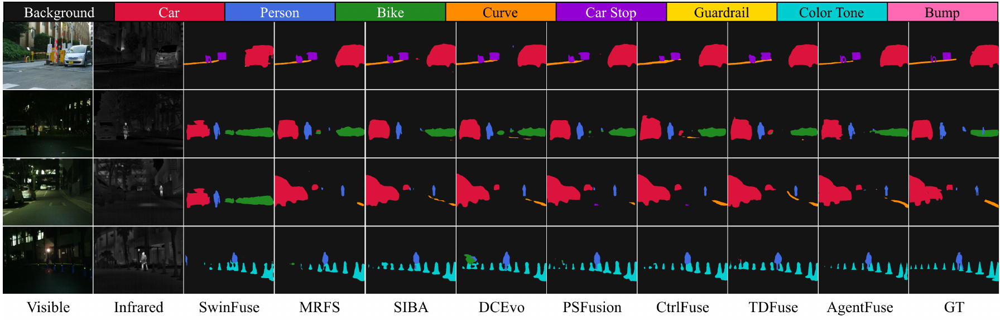
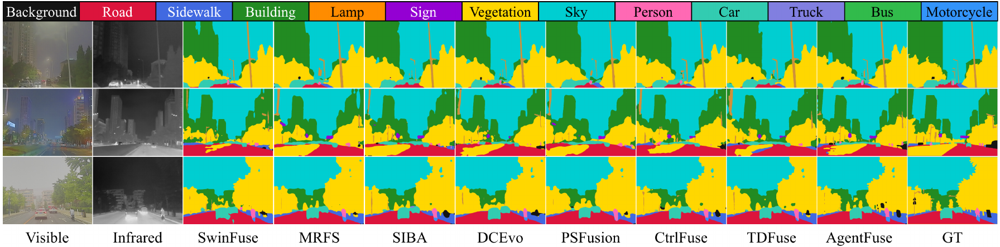
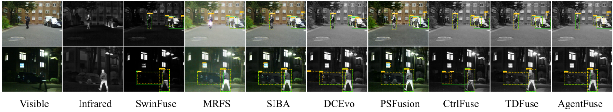
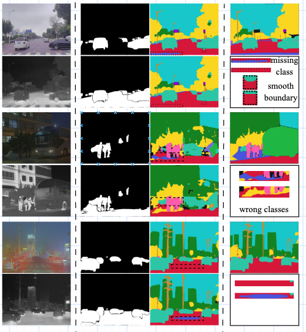

AgentFuse: Task-Driven Agentic Evidence Arbitration for Infrared–Visible Image Fusion
Abstract
Infrared–visible image fusion aims to integrate complementary multimodal evidence for downstream perception, yet existing methods typically learn a shared fusion policy that cannot adapt to task- and sample-specific requirements at inference time. To address this limitation, we propose AgentFuse, a task-driven evidence arbitration framework that reformulates fusion from static multimodal aggregation into task reasoning–guided adaptive control. Given an infrared–visible image pair and a task instruction, a vision-language agent jointly interprets the task objective and current observation to generate a structured plan describing spatial relevance, modality preference, and suitable fusion operations. AgentFuse translates this high-level plan into executable controls through three coordinated mechanisms: spatial prompting to determine where evidence should be emphasized, modality-aware prompt modulation to determine what evidence should be prioritized, and dynamic expert routing to determine how the selected evidence should be integrated. This design enables a unified fusion network to produce task-specific behaviors while adapting its evidence allocation to individual samples. Extensive experiments on multiple infrared–visible fusion benchmarks for semantic segmentation and object detection demonstrate that AgentFuse consistently generates fused images with improved downstream perception performance.
Framework
From high-level agent reasoning to executable control over a unified fusion network.
Experiments
Evaluation focuses on downstream perception, including semantic segmentation and object detection.
Task-conditioned planning
The same infrared–visible pair can benefit from different fusion priorities depending on the downstream task.
| Agent plan | Segmentation mIoU ↑ | Detection mAP50 ↑ |
|---|---|---|
| Segmentation-oriented | 0.7032 | 0.9125 |
| Detection-oriented | 0.6674 | 0.9570 |
MSRS task-specific plan comparison. Both settings use the same underlying fusion network; downstream metrics are computed for their respective tasks.
Semantic segmentation
DeepLabV3 is fine-tuned on fused training images generated by each method, as reported in Table III of the manuscript.
| Fusion method | MSRS mIoU ↑ |
|---|---|
| SwinFuse | 0.6017 |
| CtrlFuse | 0.6598 |
| MRFS | 0.6669 |
| DCEvo | 0.6645 |
| TDFuse | 0.6648 |
| PSFusion | 0.6825 |
| SIBA | 0.6889 |
| AgentFuse | 0.7032 |
Reported results from the current AgentFuse manuscript.
Object detection
YOLOv8s is fine-tuned on fused training images generated by each method. The table reports the manuscript’s MSRS and DroneVehicle mAP50 results.
| Fusion method | MSRS ↑ | DroneVehicle ↑ |
|---|---|---|
| SwinFuse | 0.8770 | 0.738 |
| MRFS | 0.8790 | 0.727 |
| SIBA | 0.9165 | 0.736 |
| DCEvo | 0.9200 | 0.717 |
| PSFusion | 0.9240 | 0.667 |
| CtrlFuse | 0.9400 | 0.728 |
| TDFuse | 0.9375 | 0.738 |
| AgentFuse | 0.9570 | 0.745 |
mAP50; manuscript Table V.
Qualitative comparisons
Examples from the manuscript compare segmentation and detection results across fusion methods. Select an image to view it at full size.



Task-conditioned planning
For the same input pairs, the upper prediction uses a segmentation-oriented support mask and the lower prediction uses a detection-oriented mask. Both use the same downstream segmentation model.

Citation
@misc{agentfuse2026,
title = {Task-Driven Agentic Evidence Arbitration for Infrared-Visible Image Fusion},
author = {Liu, Shurui and Lu, Ziqian and Wang, Zhao and Yu, Yunlong},
note = {Manuscript; update publication details before citation}
}
Bibliographic details will be updated upon publication.